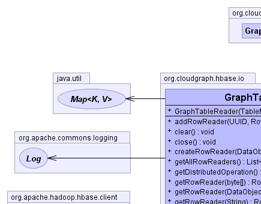
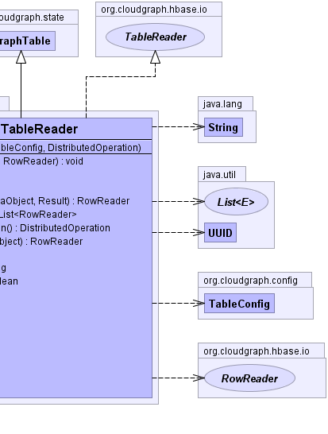
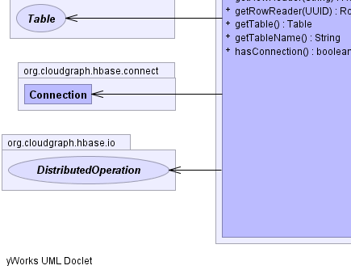
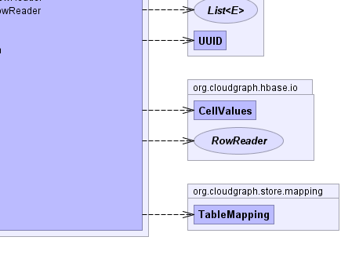

public class GraphTableReader extends GraphTable implements TableReader
Acts as a container for one or more RowReader elements and
encapsulates the HBase client Get operations for use in read operations across one or more graph rows.
RowReader|  |  |
|  |  |
tableConfig| Constructor and Description |
|---|
GraphTableReader(TableMapping table,
DistributedOperation distributedOperation) |
| Modifier and Type | Method and Description |
|---|---|
void |
addRowReader(java.util.UUID uuid,
RowReader rowReader)
Adds the given row reader context mapping it to the given UUID
|
void |
clear()
Frees resources associated with this reader and any component readers.
|
void |
close()
Closes tables and connections.
|
RowReader |
createRowReader(commonj.sdo.DataObject dataObject,
CellValues resultRow)
Creates and adds a row reader based on the given data object and result row
mapping it by UUID string and row key string.
|
java.util.List<RowReader> |
getAllRowReaders()
Returns all row reader context values for this table context.
|
DistributedOperation |
getDistributedOperation()
Returns the distributed context associated with this table operation
context.
|
RowReader |
getRowReader(byte[] rowKey)
Returns the row reader context for the given row key or null if null exists
|
RowReader |
getRowReader(commonj.sdo.DataObject dataObject)
Returns the row reader context for the given data object or null if null
exists
|
RowReader |
getRowReader(java.lang.String rowKey)
Returns the row reader context for the given row key or null if null exists
|
RowReader |
getRowReader(java.util.UUID uuid)
Returns the row reader context for the given UUID
|
org.apache.hadoop.hbase.client.Table |
getTable()
Returns the HBase table pooled connection for this context.
|
java.lang.String |
getTableName()
Returns the qualified table name associated with this reader.
|
boolean |
hasConnection()
Returns whether there is an active HBase table pooled connection for this
context.
|
getTableConfigclone, equals, finalize, getClass, hashCode, notify, notifyAll, toString, wait, wait, waitgetTableConfigpublic GraphTableReader(TableMapping table, DistributedOperation distributedOperation)
public java.lang.String getTableName()
getTableName in interface TableReaderpublic org.apache.hadoop.hbase.client.Table getTable()
TableOperationgetTable in interface TableOperationpublic boolean hasConnection()
hasConnection in interface TableOperationpublic RowReader getRowReader(commonj.sdo.DataObject dataObject)
getRowReader in interface TableReaderdataObject - the data objectpublic RowReader getRowReader(byte[] rowKey)
getRowReader in interface TableReaderrowKey - the row key bytespublic RowReader getRowReader(java.lang.String rowKey)
TableReadergetRowReader in interface TableReaderrowKey - the row key stringpublic RowReader getRowReader(java.util.UUID uuid)
getRowReader in interface TableReaderuuid - the UUIDpublic void addRowReader(java.util.UUID uuid,
RowReader rowReader)
throws java.lang.IllegalArgumentException
addRowReader in interface TableReaderjava.lang.IllegalArgumentException - if an existing row reader is already mapped for the given data
object UUIDuuid - the UUIDrowReader - the row reader contextpublic java.util.List<RowReader> getAllRowReaders()
getAllRowReaders in interface TableReaderpublic RowReader createRowReader(commonj.sdo.DataObject dataObject, CellValues resultRow) throws java.lang.IllegalArgumentException
createRowReader in interface TableReaderjava.lang.IllegalArgumentException - if an existing row reader is already mapped for the given data
object UUIDdataObject - the data objectpublic DistributedOperation getDistributedOperation()
getDistributedOperation in interface TableOperationpublic void clear()
clear in interface TableReaderpublic void close()
throws java.io.IOException
TableReaderclose in interface TableReaderjava.io.IOExceptionCloudGraph® is a registered trademark of TerraMeta Software, Inc. Copyright © 2014 - All Rights Reserved.